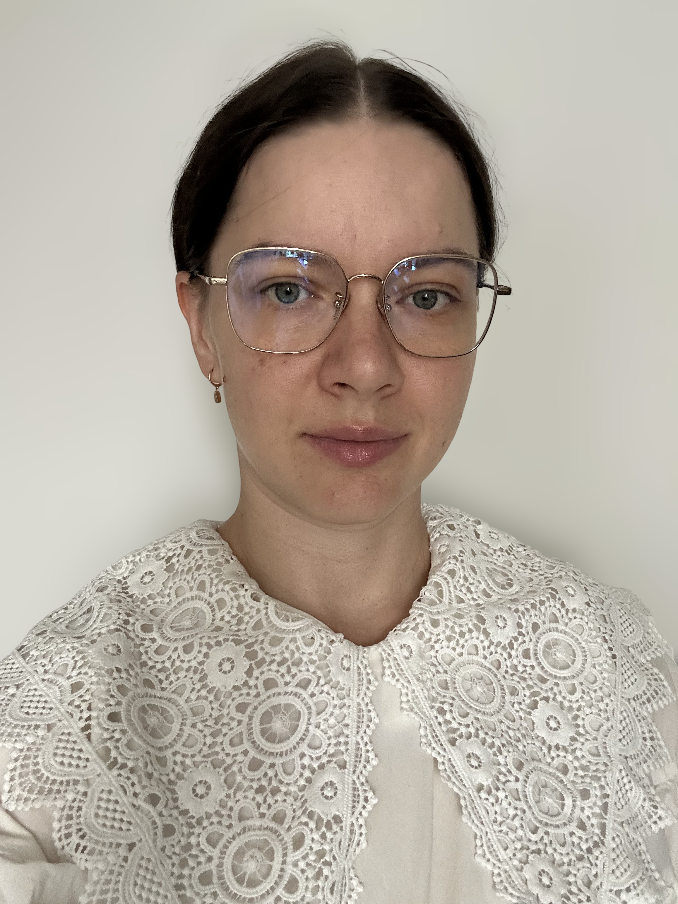

Home
Publications
Teaching
Service
Talks
Group
Contact

Pepa Atanasova
Assistant Professor (Tenure Track)
Department of Computer Science
CopeNLU Group
Scholar
GitHub
LinkedIn
Email
CV
Service
Leadership Roles
Secretary,
SIGREP
(ACL Special Interest Group on Representation Learning)
Industry Track Chair,
EMNLP 2026
Publication Chair,
EACL 2027
Event Organisation
Trustworthy AI P1 Program Workshop Series
Pre-ACL Workshop in Copenhagen
, 2025
9th Workshop on Representation Learning for NLP (REPL4NLP)
, ACL 2024
EACL 2023
, Website Co-Chair
SemEval-2020 Task 12: OffensEval
- Multilingual offensive language identification
CLEF-2019 CheckThat! Lab
- Task 1: Check-Worthiness [
Code/Dataset
]
SemEval-2019 Task 8: Fact checking in community question answering forums
CLEF-2018 CheckThat! Lab - Task 1: Check-worthiness [
Code/Dataset
]
Student Research Workshop, RANLP 2017 [
Proceedings
]
Area Chair / Senior Programme Committee
Industry Track Chair,
EMNLP 2026
ARR 2023-Now, Area Chair for Interpretability, Interactivity and Analysis of Models for NLP track
EMNLP 2023
, Area Chair for Interpretability track
REPL4NLP workshop, ACL 2024
Student Research Workshop, RANLP 2017, Senior Programme Committee